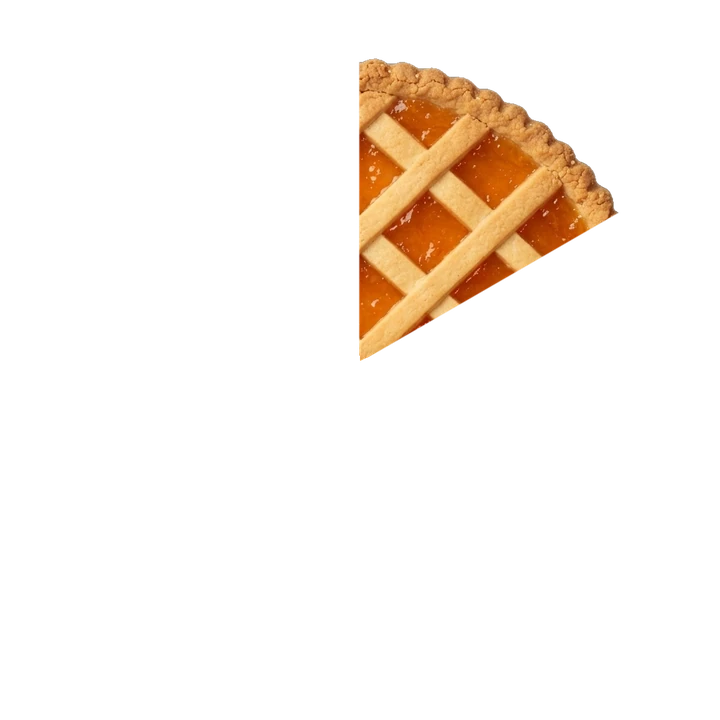
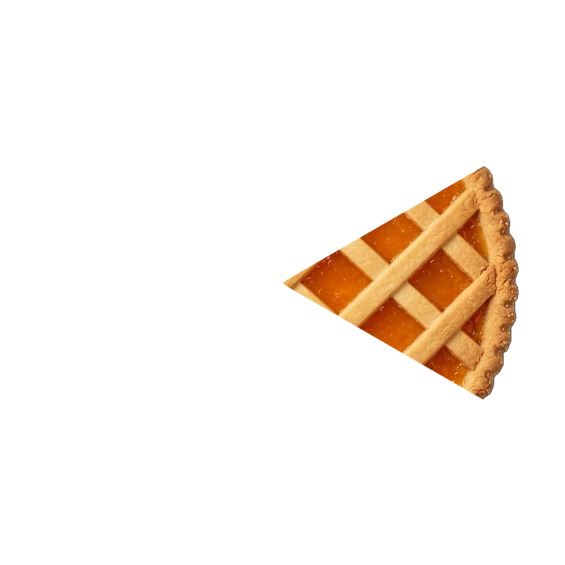
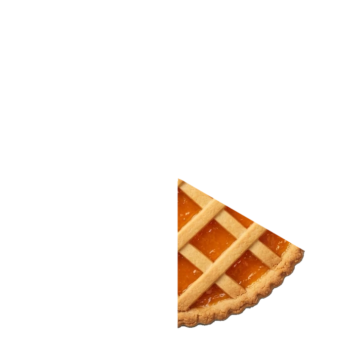
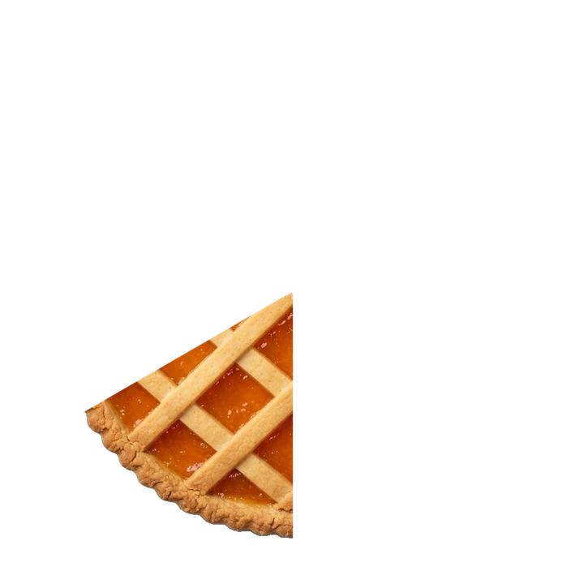
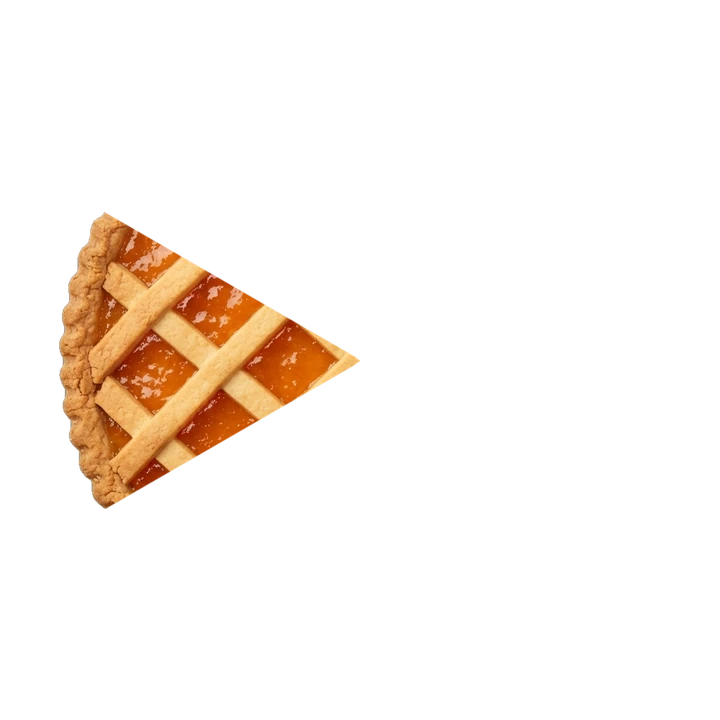
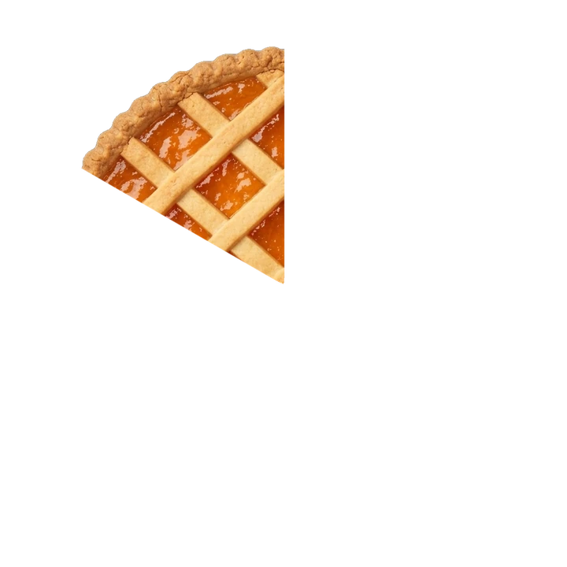

Le crostate
Fatte in casa la mattina presto, prima che scenda chiunque.
Tre stelle a gestione familiare · Misano Adriatico · dal 1980 · 8,4 su Booking






Fatte in casa la mattina presto, prima che scenda chiunque.
Si fa al momento, uno per volta. Non esce da un pulsante.
Plumcake affettato, torte del giorno, frutta tagliata al mattino.
Affettati e uova, per chi la mattina non vuole zucchero.
Senza glutine, vegetariana, vegana. Basta dirlo la sera prima.
Il buffet resta apparecchiato fino alle 12. Il tempo di finirla con calma.
La camera resta tua fino alle sette di sera, senza supplemento. Fai l'ultimo bagno, torni, ti cambi con calma, e parti quando ti pare.
Aperto nel 1980, stessa famiglia da allora. È il motivo per cui quasi tutte le recensioni finiscono per parlare di due cose: la colazione e i proprietari.
8,4 su Booking
Citazione Una recensione vera, con nome e data da scegliere con la proprietàScrivici
800mdalla spiaggia
150mdalla stazione
5mindal circuito
Il mare è di là,
il treno è dietro l'angolo.
Hotel Maioli
Via Matteotti 12
47843 Misano Adriatico (RN)
Oppure chiama 0541 613228 · scrivi su WhatsApp · nessuna commissione, si prenota con noi